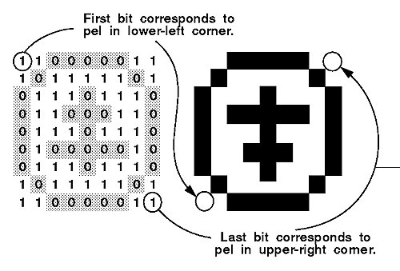

Applications can use bit maps to:
An application can display a bit-map image on any raster output device. A raster is a rectangular matrix of pels on a video display or dot matrix printer. A raster output device displays an image by setting pels in its matrix to colors specified in a corresponding bit map. An image created in this way is called a "bit-map image". Bit maps cannot be sent to vector output devices such as plotters.
A bit map is drawn to an output device row by row. Each horizontal line of pels is known as a scan line.
There is a 1-to-1 correspondence between the number of rows of pels in a bit-map image and the rows of bits in a bit map. The first pel in a bit-map image is in the lower-left corner, and the last pel is in the upper-right corner. The pels are in left-to-right order inside each row of the image. The following figure shows this relationship between bit map and image. 
Bits and Pels in a Bit-Map Image
When an application creates a bit map by calling GpiCreateBitmap, it specifies the bit-map width and height in terms of pels in the bit-map image. The width is the number of pels within a row; the height is the number of rows. The application must store these dimensions in the BITMAPINFO2 and BITMAPINFOHEADER and pass their addresses to GpiCreateBitmap.